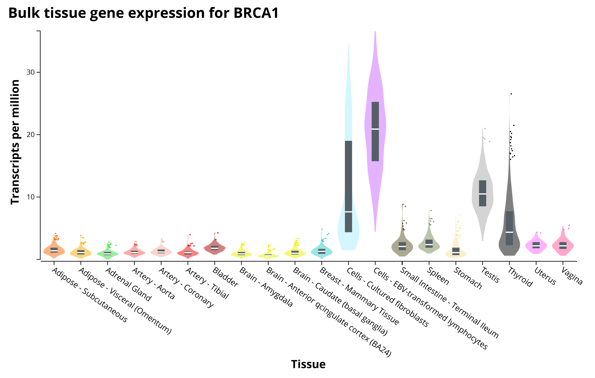

Chapter 4 Lab 3: Logical Subsetting and Conditional Filtering
Objectives:
- To understand Boolean logic (AND, OR, NOT) in programming
- To use logical comparisons to build TRUE/FALSE vectors
- To use conditional filters to isolate specific rows of a data set
- To apply subsetting to isolate biological variables or categories of interest
Last lab we learned to build vectors and data frames. Today we will learn how to ask R questions about our data and pull out only the rows that answer “yes.”
4.1 Logical comparisons
R can evaluate whether a statement is TRUE or FALSE using comparison operators:
| Operator | Meaning |
|---|---|
== |
equal to |
!= |
not equal to |
> |
greater than |
< |
less than |
>= |
greater than or equal to |
<= |
less than or equal to |
## [1] TRUE## [1] FALSE## [1] FALSE## [1] TRUEThese comparisons also work element-wise on a whole vector:
## [1] FALSE TRUE TRUE FALSE TRUE FALSEQuestion 1
-
Create a numeric vector called
ageswith 8 numbers between 1 and 100 -
Write the code to check which elements of
agesare greater than 30 -
Write the code to check which elements of
agesare exactly equal to 18
4.2 Boolean logic: AND, OR, NOT
Often we want to combine more than one condition:
| Symbol | Meaning |
|---|---|
& |
AND — both conditions must be TRUE |
\| |
OR — at least one condition must be TRUE |
! |
NOT — flips TRUE to FALSE and vice versa |
## [1] FALSE TRUE TRUE FALSE FALSE TRUE## [1] FALSE FALSE FALSE TRUE TRUE FALSE## [1] TRUE FALSE FALSE TRUE FALSE TRUEQuestion 2
-
Using your
agesvector from Question 1, write code that identifies which values are between 18 and 65 (inclusive) using& -
Write code that identifies which values are younger than 18 OR older
than 65 using
| -
Explain, in your own words, the difference between
&and|
4.3 Subsetting vectors and data frames
Once you have a logical (TRUE/FALSE) vector, you can use it inside square brackets [ ] to pull out only the elements where the condition is TRUE.
## [1] 5 8 9The same idea extends to data frames, but now we have to say whether we are filtering rows or columns. Recall from Lab 2 that data frames use dataframe[rows, columns] syntax.
species <- c("frog", "frog", "toad", "toad", "salamander")
length_mm <- c(45, 52, 38, 41, 60)
site <- c("pond1", "pond2", "pond1", "pond2", "pond1")
herps <- data.frame(species, length_mm, site, stringsAsFactors = FALSE)
herps## species length_mm site
## 1 frog 45 pond1
## 2 frog 52 pond2
## 3 toad 38 pond1
## 4 toad 41 pond2
## 5 salamander 60 pond1To get only the rows where species is "frog":
## species length_mm site
## 1 frog 45 pond1
## 2 frog 52 pond2The subset() function does the same thing with slightly friendlier syntax:
## species length_mm site
## 1 frog 45 pond1
## 2 frog 52 pond2You can combine conditions with & and | inside subset() as well:
## species length_mm site
## 2 frog 52 pond2Question 3
-
Using the
herpsdata frame above (or a similar data frame you build with at least 8 rows and one categorical + one numeric column), write code to:-
Subset only the rows collected at
“pond1” -
Subset only the rows where
length_mmis greater than 40 ANDsiteis“pond1” -
Subset the rows where
speciesis NOT“toad”(use!=)
-
Subset only the rows collected at
- For each, explain in one sentence what biological question that subset could help answer
4.4 Isolating specific variants or categories of interest
In genomics and ecology, filtering is often used to isolate specific variants, genes, or categories of interest from a much larger data set before further analysis.
For example, to make plots like this:

We need to have these types of data:
gene_id <- c("g001","g002","g003","g004","g005","g006")
chromosome <- c(1, 1, 2, 3, 3, 2)
expression <- c(12.4, 0.3, 8.9, 15.2, 0.1, 22.7)
gene.table <- data.frame(gene_id, chromosome, expression, stringsAsFactors = FALSE)
gene.table## gene_id chromosome expression
## 1 g001 1 12.4
## 2 g002 1 0.3
## 3 g003 2 8.9
## 4 g004 3 15.2
## 5 g005 3 0.1
## 6 g006 2 22.7For example, to isolate genes on chromosome 3 that show high expression (say, above 10):
## gene_id chromosome expression
## 4 g004 3 15.2Question 4
-
Using the
gene.tableexample (or a similar table of your own with at least 8 rows), write code to isolate genes with expression below 1 (candidates for “not expressed”) - Write code to isolate genes on chromosome 1 OR chromosome 2
- Why might a biologist want to filter out low-expression genes before doing further statistical analysis? (This is a conceptual question — think about noise vs. signal)